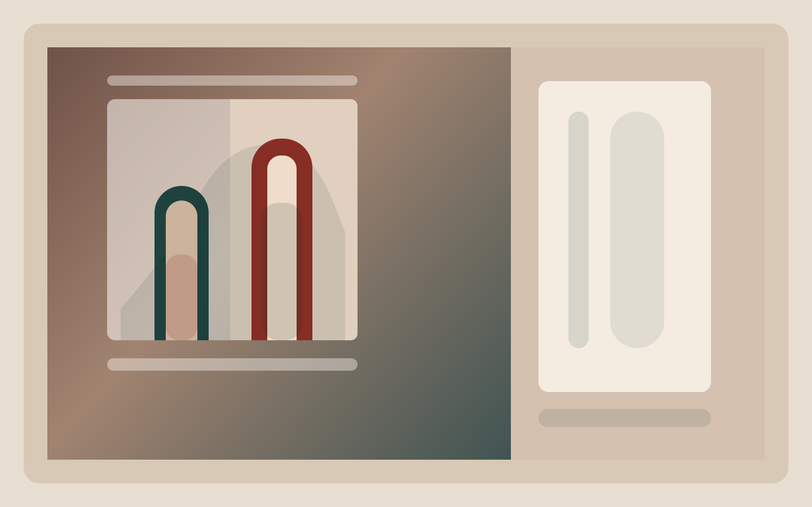
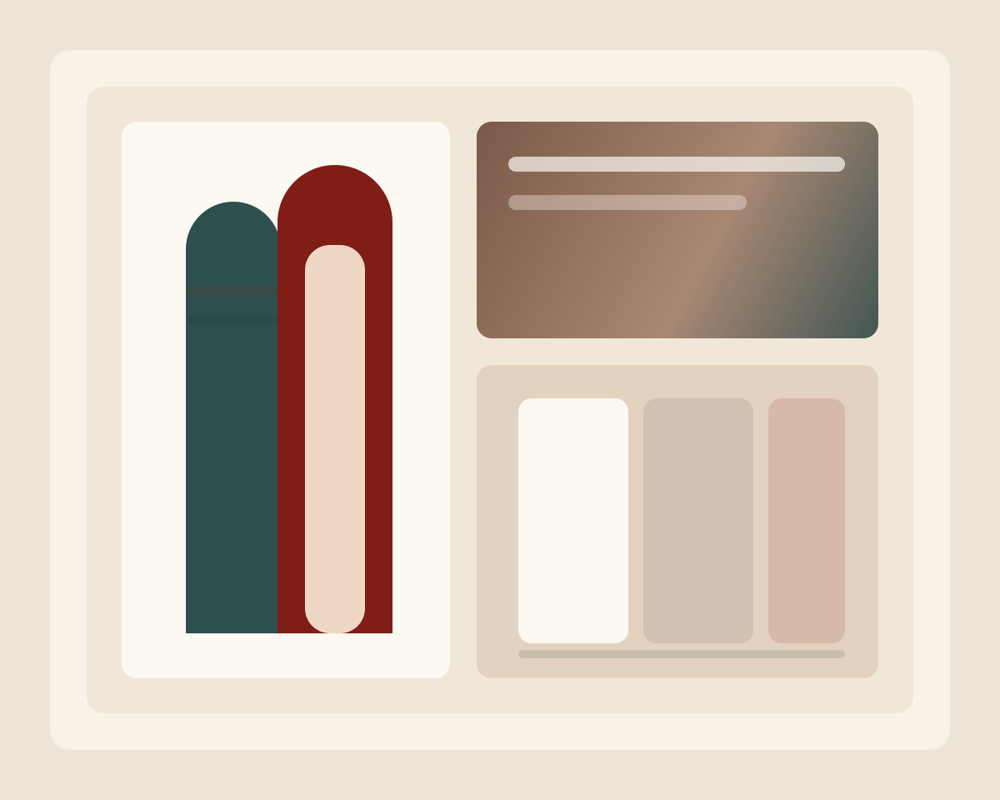
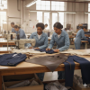
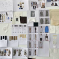
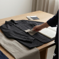
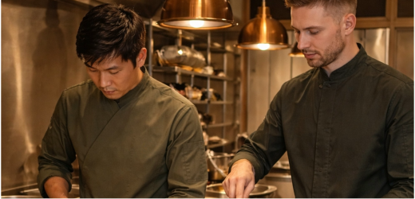
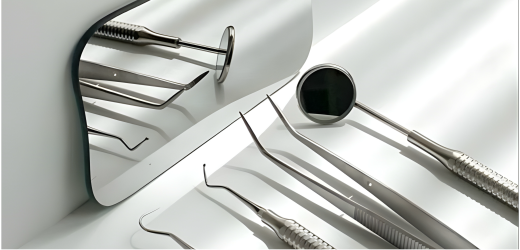
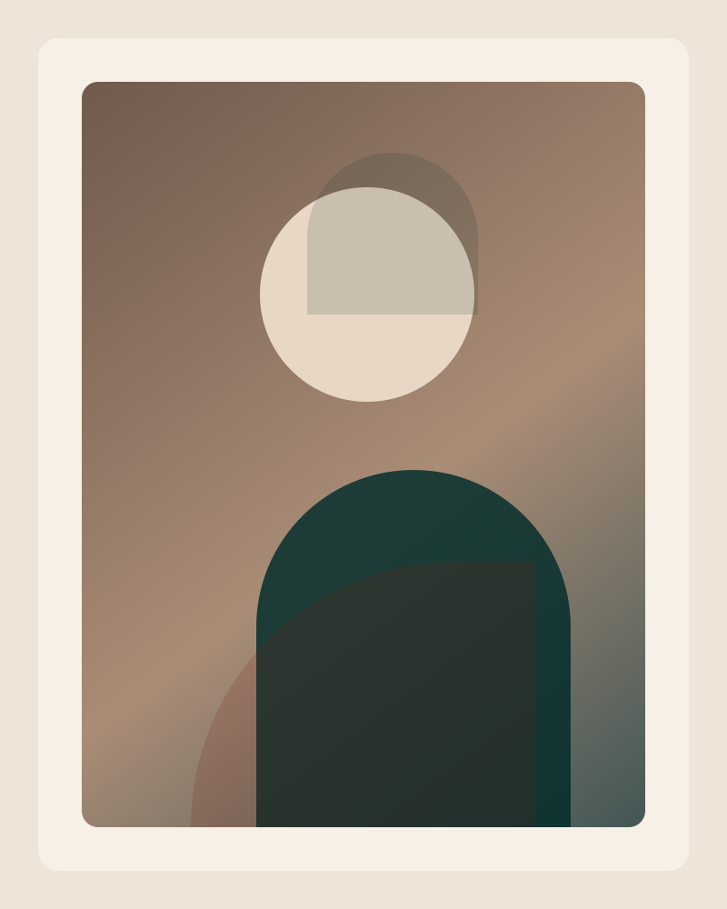
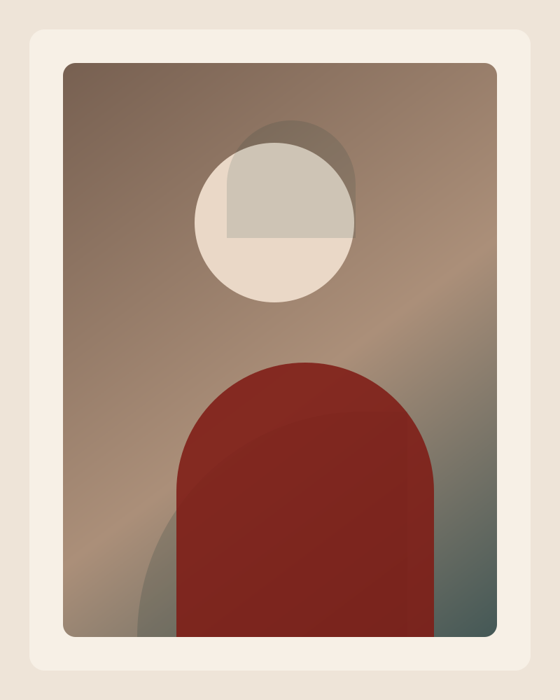
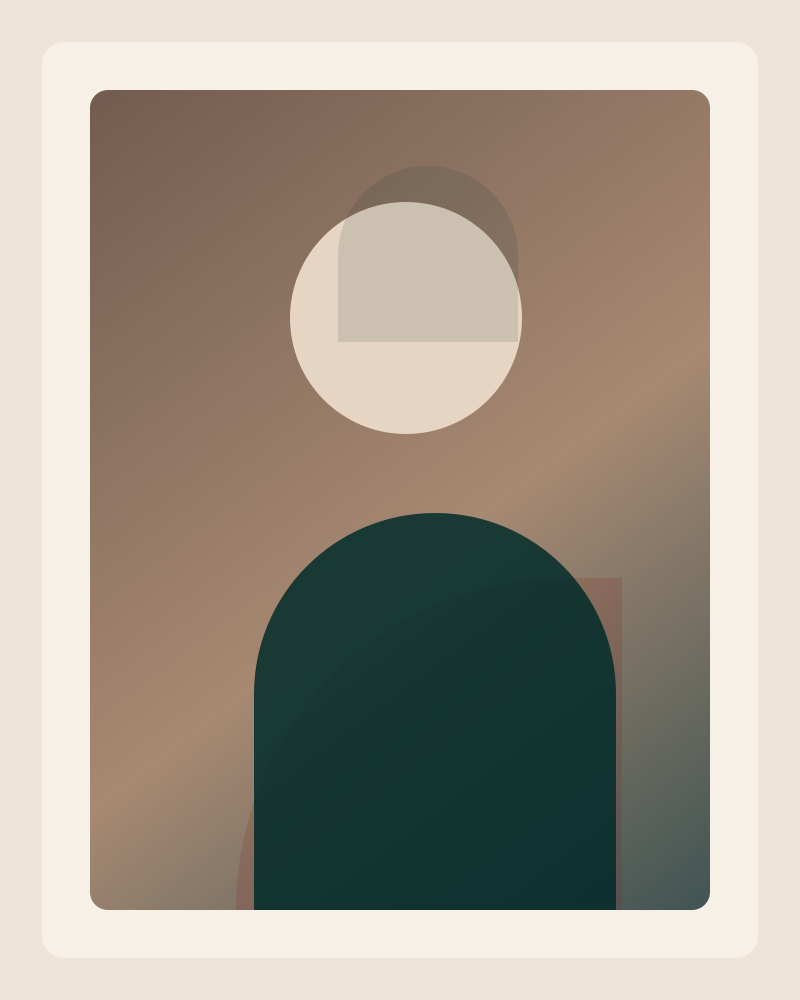

Space
Architecture, materials, and atmosphere define the aesthetic and design direction.
DESIGN AND PRODUCTION STUDIO FOR CUSTOM UNIFORMS
Not just a uniform, but a reflection of your professionalism: designed for your work, shaped around your story.

SERVICES
The studio focuses on the design and production of fully custom uniforms for hospitality, healthcare, and service teams.
Where clothing becomes part of the experience
WHO IT IS FOR
Select a sector to explore representative garments, application contexts, and the role clothing plays in the everyday experience
HOW WE DESIGN
A design approach that begins with the space and becomes uniforms made for the team and the overall experience.
Architecture, materials, and atmosphere define the aesthetic and design direction.
Each function is analysed in relation to movement, operational rhythm, and day-to-day tasks.
Fit, silhouette, and product categories are aligned to ensure visual and functional consistency.
Solutions are developed to respond to real usage needs, ensuring efficiency, comfort, and continuity over time.
WHAT WE CAN DEVELOP
Scalable for organisations with multiple roles and designed to maintain consistency, functionality, and efficiency at every stage of production.
GARMENT CATEGORIES
BRANDING AND IDENTITY
TECHNICAL CONSTRUCTION

PROCESS
Each phase is structured to define objectives, guide the work, and produce tangible results, contributing to the overall success of the project.
- PHASE 01
We define the project clearly before beginning development
- PHASE 02
We test, refine, and prepare the product for production
- PHASE 03
From final approval to manufacturing and delivery
CUSTOMISATION
The following sections show how we manage customisation in a structured way, from fabric selection to the definition of technical and production details.
Fabric selection is defined according to shift duration, climate conditions, level of movement, and maintenance requirements.
The colour direction begins with the space and the brand identity, then is validated under real operational conditions.
Finishes define the identity of the garment while maintaining strong performance in daily use.
Branding is developed according to the garment, frequency of use, and required level of visibility.

Local sampling and fittings allow for faster, more precise, and better-informed technical decisions.

Every garment is developed with movement, shift duration, and daily operational rhythm in mind.

Patterns, finishes, and specifications are archived to ensure consistent repeat orders over time, supporting team evolution.
PRODUCTION PARAMETERS
Open each section to explore quantities and variables linked to lead times.
We can produce from as low as 5 pieces per style, although pricing will be impacted.
Every project has its own characteristics, and pricing is defined accordingly. We do not work with rigid price lists. Each proposal is developed around your brand’s actual needs, finding the right balance between aesthetics, functionality, and budget.
Learn more about the detailsThe elements that influence development and production timelines:
CONTINUITY MODEL
The first production defines the identity of your professional wardrobe. Once validated, it becomes the basis for faster, more consistent, and perfectly aligned repeat orders in the future.
SELECTED PROJECTS
A selection of projects showing how design choices translate into daily operations, team wellbeing, and long-term continuity.

Garments in direct contact with guests, developed in harmony with architecture, visual identity, and the demands of long shifts.

Defined silhouettes, archived once and reactivated precisely as the team grows.

Essential lines and comfort-oriented construction, designed to communicate trust, clarity, and natural ease in daily use.
WHO WE ARE
Every project stays in the hands of those guiding its decisions, from design to product development to coordination. A direct approach, without intermediaries, to ensure consistency, control, and quality at every stage.

Founder and HEAD OF PRODUCT OPERATIONS
Background in design and product development. Defines silhouettes, fit logic, and technical decisions oriented toward precise, repeatable production.

Co-founder and HEAD OF BUSINESS DEVELOPMENT
Leads business development by shaping strategic relationships and growth opportunities. Oversees coordination between the client and the team, ensuring consistency, clarity, and continuity throughout the entire journey, from first contact to final delivery.

Co-founder and CEO
Brings first-hand know-how built through hospitality operations, with a deep understanding of the real needs of the people who wear uniforms every day. Translates on-the-ground experience into concrete design decisions, ensuring garments that are functional, comfortable, and fully aligned with the rhythm of service.
FAQ
Essential answers to the most frequent questions from hospitality, healthcare, and service teams.
No. Every project is shaped around your operational context, brand identity, and team structure. We can integrate existing bases when they offer a real advantage in terms of timing and cost, while still ensuring a final outcome that is custom, coherent, and distinctive.
Yes. Patterns, fabrics, finishes, and customisation systems are archived to ensure continuity over time. This reduces redevelopment phases, ensures consistency for new team members, and simplifies future repeat orders.
No. It is also possible to start with a single garment category or one specific role, and then expand the project over time. We define the most effective starting point together based on priorities, budget, and operational impact.
Yes. We can work with existing colour cards to optimise lead times, or develop dedicated shades and finishes when volumes allow. Customisation techniques are selected according to durability, legibility, and garment type.
LET’S SHAPE YOUR PROJECT
We assess feasibility, identify the most suitable starting point, and define a clear scope for development that is coherent, solid, and built to last.
We invite you to complete the form. You will be contacted shortly to arrange a dedicated meeting, in your space in Barcelona or in your city in Spain or abroad, or an initial introductory video call designed to understand your context, operational needs, and project identity in depth.
Select your preferred language for future visits.
Professional wardrobes designed around your space, your team, and your operations
Every project starts from a blank page.
We do not adapt existing products. We develop garments designed specifically for your space, your team structure, and the daily reality of your service.
Uniforms are conceived as a coherent wardrobe system, not as isolated pieces.
Each garment works in relation to the others, ensuring visual harmony and operational functionality across the team.
What defines a fully bespoke project
Design that starts from the space
Architecture, materials, light, and brand atmosphere guide the visual direction of the wardrobe.
Role-based development
Each function is analysed in detail, reception, service, management, operations, to create garments aligned with movement, responsibilities, and work rhythm.
Dedicated silhouettes
Fit, proportions, and lengths are defined to feel natural in the environment and ensure comfort during long shifts.
What we develop
Uniform systems for complex teams and layered environments
Hospitality settings bring together different departments, each with distinct functions and guest-facing contexts. Uniforms need to reflect the identity of the property while ensuring practicality, continuity, and operational reliability.
Main roles
Garment types:
Design priorities
Uniforms designed for dynamic environments
Food and beverage teams work in high-intensity settings. Garments must support the rhythm of service while balancing durability, comfort, and visual presence.
Garment types
Key elements:
Garments designed for comfort-focused environments
In wellness settings, uniforms help create an atmosphere of calm and trust. The design prioritises softness, simplicity, and visual coherence with the identity of the space.
Garment types
Material priorities
Professional uniforms for healthcare environments
These garments support long working hours while maintaining an orderly, clean, and reassuring image. The approach prioritises functionality without giving up a refined aesthetic.
Garment types
Design and technical priorities
Hard-wearing garments for operational roles
Staff working in maintenance, logistics, and support need uniforms that are solid, functional, and consistent with the brand identity.
Garment types
Technical priorities
Garments for public-facing roles
The team is the first tangible expression of the brand. Uniforms need to communicate professionalism and elegance while ensuring comfort in daily interaction.
Garment types
Design priorities
Understanding the context, defining the direction
Every project begins with an in-depth analysis of the context in which the uniforms will be used.
Space, operational flows, team structure, and brand identity guide the first decisions and define a clear direction for the entire wardrobe.
Main activities
Operations analysis
Role mapping
Reading the space and visual identity
Definition of the design direction
The goal is to build a strong, shared foundation before development begins.
From direction to garments
The development phase translates the design direction into actual garments.
Fabrics, patterns, and construction are defined and tested through prototypes and fitting sessions to ensure comfort, functionality, and visual consistency.
Main activities
Selection and validation of materials
Pattern development
Prototype creation
Fittings and optimisation
Every decision is tested under real conditions of use to ensure long-term reliability.
Continuity, precision, control
Once approved, the garments move into production with finalised patterns, materials, and finishes.
Local production allows direct quality control and greater reliability on delivery timelines.
Main activities
Pre-production approval
Size development
Production
Preparation and delivery
A balance between quality and production sustainability
Minimum quantities vary according to garment construction and selected materials.
General guidance
Woven garments: starting from around 50 pieces per style, distributed across sizes and variants
Knitwear: generally between 100 and 150 pieces per style
Lower quantities can be considered, with possible variations linked to production efficiency.
We believe every company should be able to rely on professional uniforms without compromising its budget. That is why we adapt to your economic needs, offering flexible, customised solutions that guarantee quality, style, and consistency with your brand identity. We work alongside you to find the right balance between investment and result, creating uniforms that strengthen your brand.
Project timelines depend on the complexity of development and the production schedule.
Typical timelines
Development: 4–6 weeks
Production: 3–5 weeks
Fully bespoke projects generally require around 8 weeks from initial idea to delivery.
Factors that influence timing